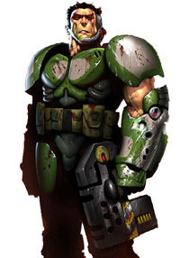

Forums galactiques > Taverne galactique : lieu de discussion informel > Salut la compagnie
Pages : 1
Loulou de Himmel 22/10 ETU 14:49 | Comme je l'ai fait savoir par des voies plus formelles, Loulou de Himmel est de retour parmi les accros de la guerre intergalactique. J'ai mis un certain temps avant de remonter la piste du jeu (qui a vraissemblablement muté pendant l'été). Il a fallu des circonstances extraordinaires pour que j'en arrive à vous envoyer ce post. Un jour vous apprendrez la formidable épopée de Loulou de Himmel. Les scribes de ma planète mère s'y sont attelés depuis peu et y travaillent jour et nuit. Mon arrivée tardive m'a empêché de suivre l'évolution des forces en présences. Une âme charitable aurait-elle l'obligeance de me faire un rapide briefing ? Enfin, j'ai ouï dire qu'un journal galactique était en ligne. Je serais ravie d'y prendre une part rédactionnelle active. Bangkokement vôtre Loulou de Himmel |
Necrid 22/10 ETU 19:01 | Le journal galactique a été sabordé par son créateur... |
karctak 22/10 ETU 19:06  | La galaxie est calme actuelement , il n'y a que des conflit mineur qui n'ont pas encore d'importance notable. Néamoin il y a toujours quelques "clan" comme les ultremes ou les divins. Il y en a surment d'autre. Voila c'est très bref mais je n'ai pas le temps de m'étendre plus. En tout cas bon retoure dans la galaxie ! |
| intox  22/10 ETU 19:21 | J'ai déja participais a l'ancienne version d'Apocalysis(sous le meme nom) a l'époque des grandes guerres et je trouve aussi que l'univers et bien calme et je pense que cela ne peut que etre bénéfique pour les nouveaux commandants, dont je fais partie. intox PS:Est ce que quelqu'un pourrait me dire se que sont devenue les anciennes puissances et clans? |
dieu 23/10 ETU 09:57 | Bienvenue dans cette nouvelle galaxie, Loulou ! |
Pages : 1
Forums galactiques > Taverne galactique : lieu de discussion informel > Salut la compagnie